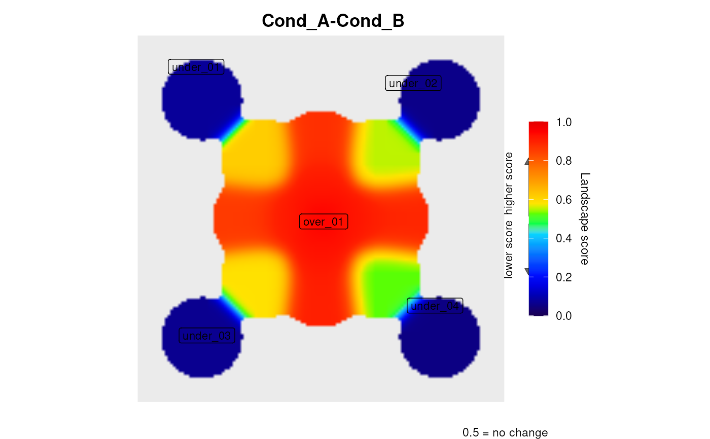
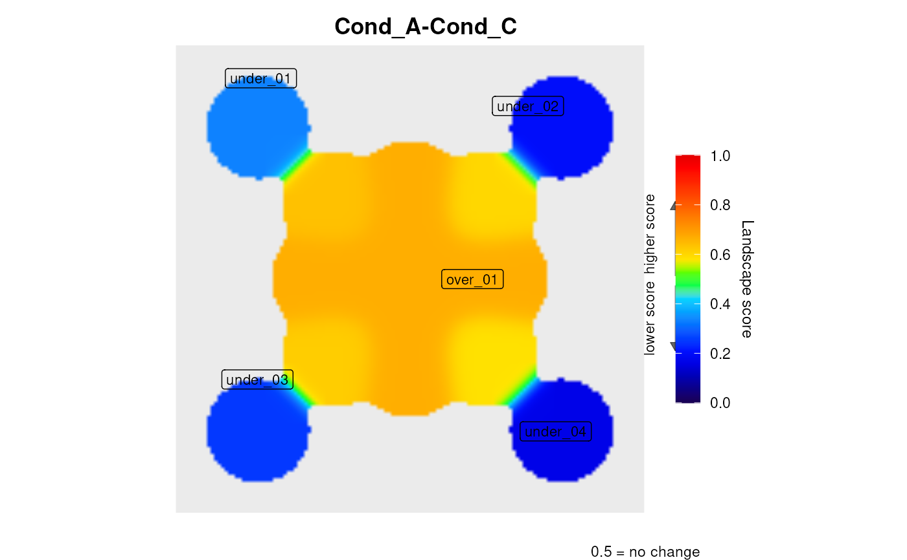
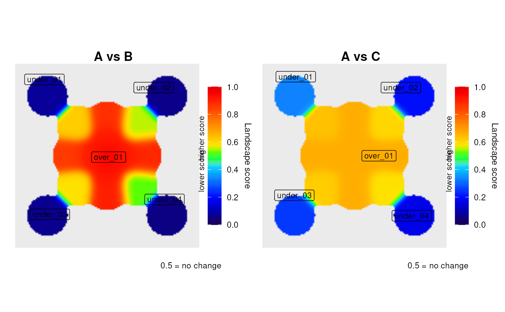
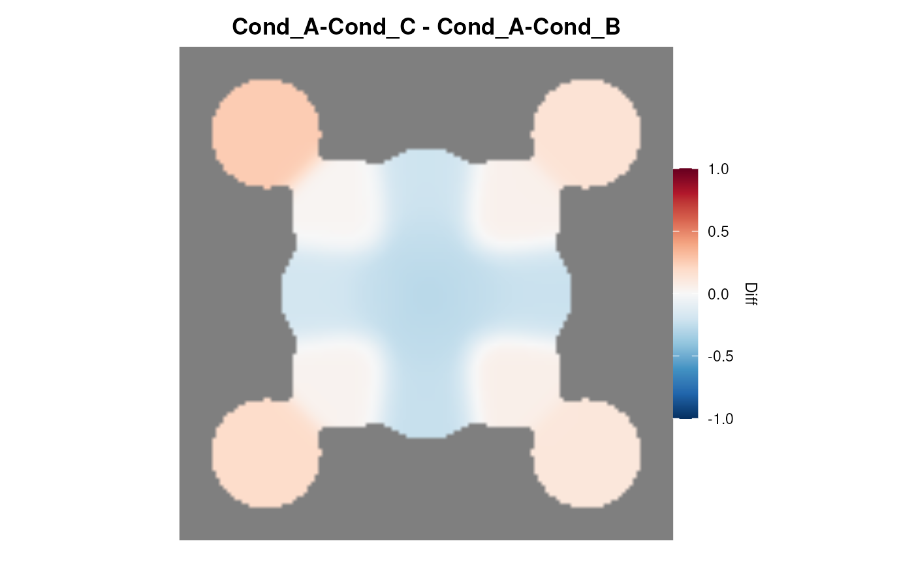

A three-condition expression file for the
hub network, enabling batch-mode processing and
testing of leviGrid and leviDiff.
Condition A is the maximum-contrast state (hub up, corners down);
Condition B is neutral; Condition C is the reverse of A.
One tab-delimited file in inst/extdata/ with columns
ID, Cond_A, Cond_B, Cond_C:
| Gene | Cond_A | Cond_B | Cond_C |
| HUB | 200 | 100 | 10 |
| N1-N4 | 200 | 100 | 10 |
| N5-N8 | 10 | 100 | 200 |
Designed to be used with hub_network.dat (fileTypeInput = "dat").
Simulated data generated for unit testing.
NULL (this object documents data files, not a function)
readExpColumn("Cond_A-Cond_B", "Cond_A-Cond_C") returns two
landscapes in a single levi() call.
Compare the two landscapes side by side.
Subtract Cond_A-Cond_B from Cond_A-Cond_C to reveal the additional contrast gained by Condition C.
# \donttest{
hub_net <- file.path(system.file(package = "levi"),
"extdata", "hub_network.dat")
mc_expr <- file.path(system.file(package = "levi"),
"extdata", "hub_multicomp_expression.dat")
res_list <- levi(
networkCoordinatesInput = hub_net,
expressionInput = mc_expr,
fileTypeInput = "dat",
geneSymbolInput = "ID",
readExpColumn = readExpColumn("Cond_A-Cond_B",
"Cond_A-Cond_C")
)


leviGrid(res_list, titles = c("A vs B", "A vs C"))

leviDiff(res_list[[1]], res_list[[2]])

# }